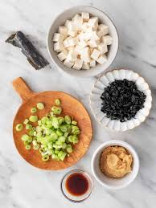

The Savoury Dashi Dense Miso Soup
This miso soup is full of savory flavors. Add more dashi to your soup if you want a stronger stock. You can use yellow, white, or red miso paste for
this soup yellow miso is sweet and creamy, red miso is stronger and saltier.
- This miso soup cooks in just 15 minutes with only five simple ingredients.
- Home cooks praise the use of dashi granules for authentic Japanese flavor.
- "Just like you'd get in a Japanese restaurant," says Allrecipes member France C.
Ingridients (1x)
- 4 cups water
- 2 tablespoons dashi granules
- 3 tablespoons miso paste
- 1 (8 ounce) package silken tofu, diced
- 2 green onions, sliced diagonally into 1/2 inch pieces
Directions
- gather all ingredients

- combine water and dashi granules in a medium saucepan over medium-high heat; bring to a boil
- reduce heat to medium and whisk in miso paste
- stir in tofu
- separate the layers of green onions, and add them to the soup. simmer gently for 2 to 3 minutes before serving